WHAT'S NEW IN AVENGERLAND
2011
Wilderswil, Interlaken-Oberhasli, Switzerland - Bernhard’s Swiss farmstead in the Mountains.

 2011
19th November -
MARK SABER
aka THE VISE
aka UNCOVERED:
Murder for
Gain (Ernest Morris: 1957)
2011
19th November -
MARK SABER
aka THE VISE
aka UNCOVERED:
Murder for
Gain (Ernest Morris: 1957)Viceroy Court, Prince Albert Road, NW8 - Mark Saber drives to interview Miss Norma Ward at her flat with Barney O'Keefe, his asistant.
 18th November - Another great
find from Geoff Dodd:
THE SAINT: The
Chequered Flag (Leslie Norman: February 1965)
18th November - Another great
find from Geoff Dodd:
THE SAINT: The
Chequered Flag (Leslie Norman: February 1965)O21: Hadley Common – On the way home from Beau's party, Simon and Catherine Marshall drive to Oscar Newley's workshop in a Rolls Royce (Hadley Common gateway to The Crescent).
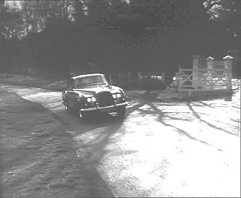

Geoff has also confirmed this location from
THE VISE: MARK SABER aka THE VISE aka UNCOVERED: Hear No Evil (Ernest Morris: 1958)Wagon Road/Barnet Road, Bentley Heath - Mark Saber drives Barney and Judy to see their new client, Miriam Booth, who lives in a large house on the east coast.
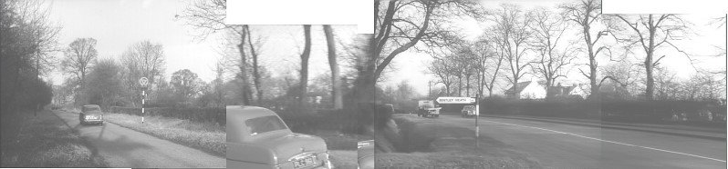
9th November - There are quite a few interesting buildings in Patchett's Green, but few have been tied down as locations. Geoff Dodd has just identified this short DEPARTMENT S sequence in the area. DEPARTMENT S: A Fish Out of WaterM10: Summerhouse Lane/Hilfield Lane, Patchett's Green -Michele Duplay drives from Rafic’s villa to her flat in the Century Building, Beirut, to collect her passport (Hilfield Lane just after junction with Summerhouse Lane).

 4th November - Pierre
Beaumont, a
newcomer to the site has made these two excellent finds:
THE
PERSUADERS!: Five
Miles To Midnight
(Val Guest: 1970)
4th November - Pierre
Beaumont, a
newcomer to the site has made these two excellent finds:
THE
PERSUADERS!: Five
Miles To Midnight
(Val Guest: 1970)Route de Grenoble by Manda, Colomars, France - After Brett steals a police car -Danny drives the Citroen with (Joan Collins) and Frank Rocco (Robert Hutton) aboardthrough Italy to their meeting place (724 Route de Grenoble).

Bridge crossing the River Esteron on the D2209 between the Communes le Broc and Gilette, Alpes- Maritimes, France - Danny (Tony Curtis) drives the Citroen with (Joan Collins) and Frank Rocco (Robert Hutton) aboard along a riverside country road and under a bridge to wait for Brett to join them. Brett (Roger Moore) arrives in a police car and gives everyone a fright. Later the police find the abandoned cars and assume that Rocco and his friends are now on foot.


Saint James' Street, W1 - Mark Saber sends Barney O'Keefe to inquire at all the jewelers to identify the manufacturer of a piece of jewelry he has seen.
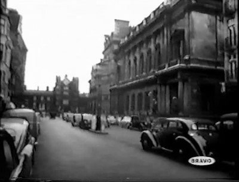
MARK SABER aka THE VISE aka UNCOVERED: The Tall Dark Man aka It's Only Mink (Ernest Morris: 1957)Burlington Gardens, W1 - Mark Saber sends Barney O'Keefe to inquire at all the jewelers to identify the manufacturer of a piece of jewelry he has seen.

Melia White House, Osnaburgh Terrace NW1 – Mark Saber and Stevie Ames go across the street to the Blake Hotel to talk business with Jack Forest and his wife. MARK SABER aka THE VISE aka UNCOVERED: Man on a Cliff (Ernest Morris: 1957)
Melia White House, Osnaburgh Terrace NW1 – Stevie Ames goes to interview everyone in Peter Kenyon's address book, she starts with a hotel barman.

Cleveland Square/Devonshire Terrace, W2 – Late one night Mr. Roberts is at Mr. Ferrari's London house attempting to negotiate the return of his stamp from Mr. Ferrari. Later Inspector Parker (Colin Tapley) arrives at the house with his men to investigate a murder.


Craven Terrace, W2 - Mr. Turner (Robert Ayres) walks along the road to a café (10 Craven Terrace).where he stands and waits. He has been followed by Pete (Neil McCallum?) who watches him from across the street. Eventually Rosie (Jan Holden) appears walking down the street and they enter the café together.After leaving the café Pete follows Rosie to her flat and he meets Mark Saber, who arrives by taxi and they eneter the bulding together (32 Craven Terrace).


L7: Vicaridge Road, Watford - James Street Edinburgh, next to the arena (Watford Football Club). Pete Paulson (Neil McCallum) waits for the kidnappers to use the telephone box. Frank (Michael Bryant) and Mark Saber (Donald Grey) wait in Saber's Porsche 356 cabriolet nearby. When Freddy (Geoffrey Hibbert) uses the phone Saber, Pete and Frank pounce.

H3 - Osbourne Road, Windsor - Brett is tipped off by Lyndon and drives BS1 to an empty house, 20 Park Way, to investigate who was employing him. 18th September - Congratulations to Ray Croft who has managed to identiy this vert tricky piece of road seen briefly in MAN IN A SUITCASE: Web with Four Spiders. MAN IN A SUITCASE: Web with Four Spiders
H70: Black Park Road/Uxbridge Road, Slough, Berkshire - With Croft's chauffeur, Frederick, in the back of the limousine, McGill leaves drives to London followed by intelligence agents (cars shown approaching junction from both sides of Uxbridge Road).
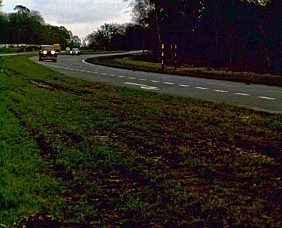
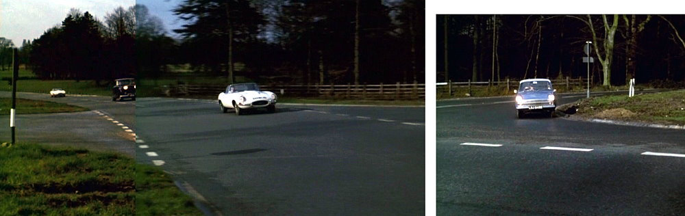
4th October - Nick Cooper - The shot of "Camden Rd" station is footage re-used from the 1949 film 'The Gentle Gunman', so there's no connection between it and the interior seen in the episode, and I'm now sure that it's actually Holborn station, rather than South Wimbledon (kicking myself that I didn't work it out earlier!). STRANGE REPORT: Report 0649 SKELETON: 'Let Sleeping Heroes Lie'Holborn Station, WC2 - There is an air raid on September 12th 1940 and people hurry to “Camden Road Underground Station” for shelter

Probably at least 95%, based on the "drop" of the triple-escalators, and the uplighters.:The escalators are almost certainly the Piccadilly Line ones at Leicester Square, as presumably is the ticket hall. Compare to the near contemporary use of the same station - only the Northern line escalators - in
ADAM ADAMANT LIVES. STRANGE REPORT: Report 0649 SKELETON: 'Let Sleeping Heroes Lie' (Peter Medak: August/September 1968)Leicester Square Underground Station, WC2 - Roger Llewellyn (Edward Cast) makes his way through the Underground station on the night of the air raid. When he senses that he is being followed he rushes through the exit, past the ticket collector (Leslie Sarony).
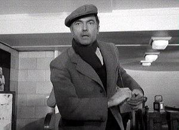


Incidentally, image 3 of my 'Strange Report' screen-grabs, identified as stock footage, is inside one of the Deep Level Tube Shelters, probably the Stockwell one (one sub-shelter was named "Turner" which seems to match the partially-obscured sign on the left).
STRANGE REPORT: Report 0649 SKELETON: 'Let Sleeping Heroes Lie'(Peter Medak: August/September 1968)Stockwell Underground Station, SW9 - A busy night in "Camden Road" station during the London blitz and for Roger Llewellynit will be his last (stock footage of cevilians sheltering in Stockwell One deep level shelter).

Danny and Brett are chasing the assassin (The Major played by Colin Vancao) in the grounds of Pinewood Studios. When the Major uses his ladder to climb the wall to get to his car, it is parked in the same small lane (behind the church off Old Mill Road) as seen at the beginning of Greensleeves (where Danny and Brett shimmy the wall to break into his Lordship's mansion). We see the Major drive his car off towards Old Mill Road.


Penton Hook Lock, Surrey - Nora Prescott walks past a Thames lock as she makes her way from the pub to a boathouse to meet Simon Templar.
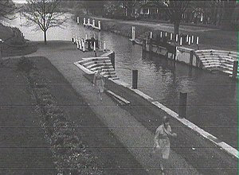
 THE SAINT:
The
Invisible Millionaire
THE SAINT:
The
Invisible MillionaireLower Sunbury, Surrey - Nora Prescott arrives at a boathouse to await Simon Templar’s visitation. Unfortunately, she is followed by a mysterious figure with evil intent (boathouse is still there opposite Sunbury Lock).

Corner of Hanover Square and Tenterden Street - W1Simon Templar drives to London to talk to his broker about Marvin Chase

Cavendish Square/Cavendish Place/Chandos Street, W1 - John Drake travels by taxi to the apartment Liz Parish shares with Parish with Elizabeth Warren.


Brett Sinclair (Roger Moore) follows Fosters car to the village where John Hatton is being held in his Aston Martin. They in turn are being followed by Danny Wilde (Tony Curtis) and Shelley Masterton (Jennie Linden) in Danny's Ferrari. Brett arrives in the village and finds Forster's car parked, Brett goes to investigate. Danny and Shelley arrive later a little later and Danny tells Shelley to wait in the car while he investigates (the scenes featuring the villagers were filmed on the Pinewood backlot).
(Spotted by Francis Van Everbroeck, October 2011) September 11th - Identified by Alan Field based on information from Mark O on the Britmovie Forum. THE HUMAN JUNGEL: The Flipside Man
E13: Frogmoor, High Wycombe - Danny Pace (Jess Conrad) drives his convertible to the dance hall on Beebury Street where he won his record contract. Danny breaks in and Doctor Corder M.D. D.P.M. (Herbert Lom) arrives to talk to him but ends up calling for an ambulance instead.
 August 30th -
Many thanks to
Jaz Wiseman who has sent in a number of new THE PERSUADERS! locations.
August 30th -
Many thanks to
Jaz Wiseman who has sent in a number of new THE PERSUADERS! locations.
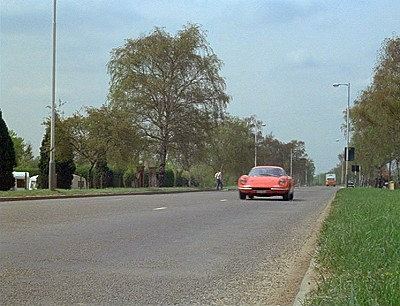
That's Me Over There: After leaving Heathrow Airport, Danny Wilde and Judge Fulton drive along A4 Bath Road, Hounslow, Middlesex in Danny's red Ferrari Dino on their way into central London to meet Brett Sinclair at his apartment.

Another location in Antibes is where Danny, Brett and Pekoe are talking about Julie Blake, again this is by the harbourside but I can not confirm the exact road.
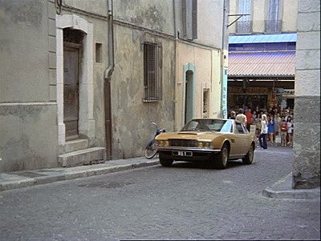
Cours Messena and Rue de La Paroisse/Rue Christian Chessel.: Brett drives BS1 down the Cours Massena and into Rue de La Paroisse/Rue Christian Chessel and arrive at Pekoe and Julie's apartment. We get a brief glimpse of the Picasso Museum at the end of the road. Later as Brett chases Ravel (les Crawford), who has been rummaging in Julie and Pekoe's apartment, back into the street where BS1 is parked. The steps that Ravel and Brett run down are to the right hand side of the Picasso Museum. Brett and Pekoe leave the apartment and go back to BS1 where they are watched by Inspector Blanchard.
August 12th - A series of clues has just fallen neatly into place thanks to Jaz Wiseman, Geoff Dodd and Piers Johnson. March 18th 2007: From Jaz Wiseman:"Just going through Roy Baker's script for
Strictly For The Worms (Silent Dust) and he's written in the names of locations of where they were filming…most of the other location footage was filmed at Strangeways Farm, in Rowley Lane, Borehamwood."Some of the other locations listed in the script were obviously wrong, so this could not be taken as conclusive proof, especially as the farm and its building have been almost totally redeveloped.
13th September 2008: Geoff Dodd sent in photos he has taken around Strangeways Farm. 11th August 2011: Piers
Johnson sent it photos showing the farm buildings that
appear in Silent
Dust and Man-Eater
of Surrey Green are the same (as is Steed's
Costume). This meant we could use images from both Silent Dust and Man-Eater of Surrey Green
to investigate the Strangeways Farm
options more thorougly. The key feature corroborating the notes in
Jaz's script
is the bending road sign as there is a bend in the road at the location
of the
farm as indicated.
11th August 2011: Piers
Johnson sent it photos showing the farm buildings that
appear in Silent
Dust and Man-Eater
of Surrey Green are the same (as is Steed's
Costume). This meant we could use images from both Silent Dust and Man-Eater of Surrey Green
to investigate the Strangeways Farm
options more thorougly. The key feature corroborating the notes in
Jaz's script
is the bending road sign as there is a bend in the road at the location
of the
farm as indicated.

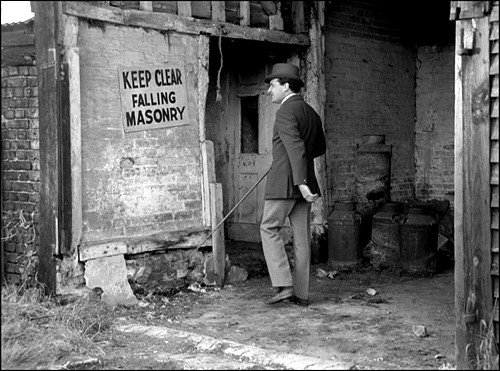

 O27: Strangeways Farm,
Rowley Lane
THE AVENGERS:
Silent Dust
(Roy Baker: June 1965)
O27: Strangeways Farm,
Rowley Lane
THE AVENGERS:
Silent Dust
(Roy Baker: June 1965)Steed (Patrick Macnee) is trying to investigate Omrod's farm buildings when he is warned off by Mellors (Conrad Phillips) with a gun. Steed walks away, but doubles back to renew his investigations. As he leaves one of the buildings he is spotted by Melloers who fires at him and chases him into a nearby spinney. Here Steed treads in a gin trap and has to lay low. He eventually collapses. That night Mrs. Peel (Diana Rigg) goes to the farm to search for steed. THE AVENGERS: Man-Eater of Surrey Green (Sidney Hayers: May 1965)
Following the lead of Peterson's cancelled order for oil drilling equipment, Mrs. Peel (Diana Rigg) drives Steed (Patrick Macnee) in her Lotus to the derelict Moat Farm, Denbigh. After exploring the property they find a space capsule and inside a dead astronaut. The military are called in and Commander Dennis (David Hutcheson) briefs Steed. Further investigation reveals an alien seed pod and botanist, Dr. Sheldon (Athene Seyler) is called in as a scientific advisor. 13th August: Geoff Dodd has just spotted some re-use of St. James’s Park, SW1 footage from THE BARON: The Persuaders used in MAN IN A SUITCASE: Burden of Proof. MAN IN A SUITCASE: Burden of Proof
St. James’s Park, SW1: Faversham and Grainger meet in Saint James's Park. 24th July - Thanks to Andy Lawrence again for sending in photos of the 2 new Saint Albans finds. 21st July - Andy Lawrence is on a roll. Yet another long-standing unknown has been found. The search for this one must have been going on for 10 yers! DEPARTMENT S: The Man in the Elegant Room
Hedley Road, Saint Albans, Hertfordshire : An estate agent takes his client to see a warehouse property in Islington (they actually start off in Islington’s Market Road). They arrive at the warehouse...

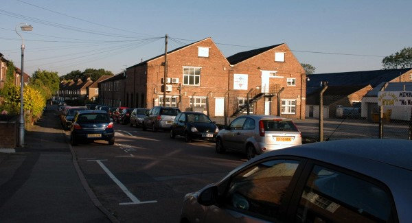
20th July - Many thanks to Colin Wilson with some credit to Andy Lawrence for renewing the search. Colin has been searching for this road since 2008, but it has been on the radar for 15 years! THE AVENGERS: The Morning AfterJunction of Burnham Road with Harlesden Road (looking towards Eaton Road in the distance), C3: Saint Albans: Handcuffed together, Steed and Merlin explore the deserted streets. They pass a bag of coal lying in the road.

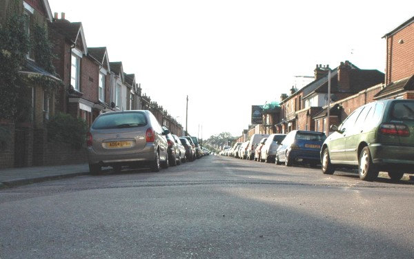
30th April - Mike Richardson had written in to let us know that C6: Brocket Hall appears in the title sequence for the 1985 Robert Wagner series LIME STREET. 29th April - Thanks to Slicer Wanstead who drew my attention to this missing location and Tavistock who identified it both of The Britmovie Forum. Willes Road, NW5 - THE CHAMPIONS: The Night People (Robert Asher: June 1967)Craig is sent to find out information about Sir Douglas Trennick and witchcraft in the Cornwall Public Records Office (Prince of Wales Baths, Prince of Wales Road, Willes Road entrance).

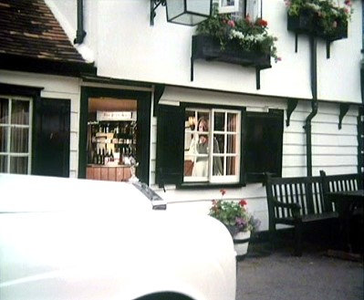
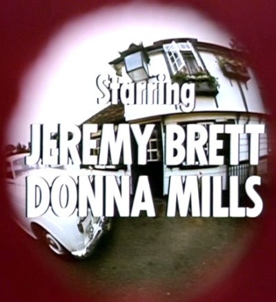
Forty Hall, Enfield 23rd
April - A unexpected bombshell today from
Simon
Finch who has found a location that a great many people have
been looking
for and was considered by many as lost forever. I'll let Simon tell the
story in his own words.
23rd
April - A unexpected bombshell today from
Simon
Finch who has found a location that a great many people have
been looking
for and was considered by many as lost forever. I'll let Simon tell the
story in his own words.
'The house used in the
DANGER MAN episode The Lonely Chair and also MURDER SHE SAID, the Margaret Rutherford film was 'Radnor Hall', in Allum Lane, Elstree; only a short distance from the MGM studios. Sadly it appears to have been demolished almost as soon as the film crews had left. There are 5 pictures of the house in the collection at Borehamwood Library which between them identify it beyond doubt. The site of the house is now a waste recycling centre run by Hertsmere Council.'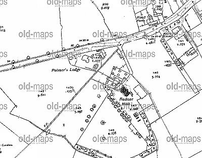
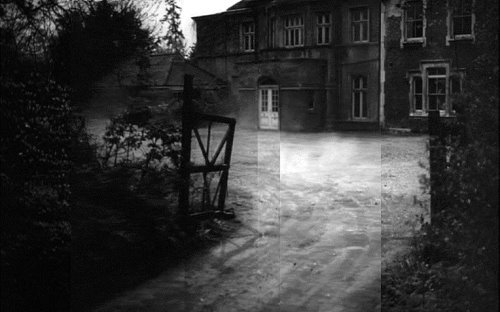
Q32: Radnor Hall, Alum Lane, Elstree - DANGER MAN: The Lonely Chair (Charles Frend: ??)John Drake, posing as Patrick Laurence, and Noelle Laurence are delivered by ambulance to the house where Sally Laurence is being held. THE HUMAN JUNGLE: The Man Who Fell Apart (Roy Baker: ???)
After her fall a Bedford ambulance arrives at a country hospital with Joy on board (same footage as seen above). FILM:
MURDER SHE SAID(1961) - Ackenthorpe Hall 12th April - Thanks to David Solan we now have a few newly discovered locations for THE SAINT: The Angel's Eye and a number of unknowns still to find. The unknowns can be found on pages LS67 and LS204 (a new Netherlands unknowns page). David's major find is the gates of Cranmore house, which were thought to be part of Osterley Park. David says the man who opens the gates for Jaguar was the actual Park Ranger for Trent Park, not an extra. David has also been kind enough to go out and take some photographs of the gates for the guide. The episode contains a great deal of second unit filming in Amsterdam some of which has been identified. THE SAINT: The Angel's Eye
G30: Trent Park, Cockfosters Road, Enfield - Malone and Corbett watch as Jeremy Cranmore arrives at the gates of Cranmore House in his E-Type Jaguar. The gates are opened by the park ranger and he drives through.


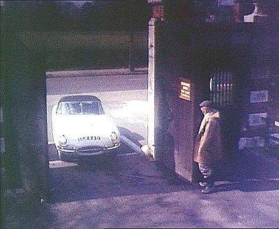
 23rd March -
Jaz Wiseman has
sent in locations for two more episodes of THE SENTIMENTAL AGENT: All Sweetness and Light
and Meet My
Son, Harry.
20th March - The results of Mike
Richardson's
extensive research intoTHE
HUMAN JUNGLE season two are now in the guide; see the list
at THE HUMAN
JUNGLE. Geoff Dodd and Alan
Field were able to help out with a couple of unknowns, but
there are still
more at LS16.
17th March - Many thanks to Paul
Agar
for sending in photos to illustrate locations in London. We don't use
StreetView images to illustrate the guide so we very much appreciate
any photos
that are sent in.
THE
PERSUADERS!:The
Time and The Place - Hamilton
Terrace, NW8
23rd March -
Jaz Wiseman has
sent in locations for two more episodes of THE SENTIMENTAL AGENT: All Sweetness and Light
and Meet My
Son, Harry.
20th March - The results of Mike
Richardson's
extensive research intoTHE
HUMAN JUNGLE season two are now in the guide; see the list
at THE HUMAN
JUNGLE. Geoff Dodd and Alan
Field were able to help out with a couple of unknowns, but
there are still
more at LS16.
17th March - Many thanks to Paul
Agar
for sending in photos to illustrate locations in London. We don't use
StreetView images to illustrate the guide so we very much appreciate
any photos
that are sent in.
THE
PERSUADERS!:The
Time and The Place - Hamilton
Terrace, NW8
 GIDEON'S WAY:
The Perfect
Crime - Boscobel
Place, SW1
GIDEON'S WAY:
The Perfect
Crime - Boscobel
Place, SW1

 GIDEON'S WAY:
The Perfect
Crime- Ladbroke
Road, W11
GIDEON'S WAY:
The Perfect
Crime- Ladbroke
Road, W11
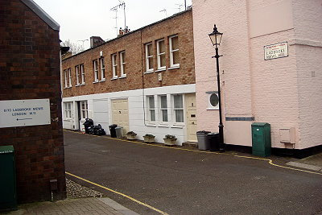
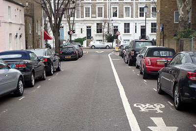

J17: Bell Lane Sand Pit, London Colney (restored to fields and partly covered by M25) - Colonel Drew (Richard Leech), Shaffer (Ronald Radd), Susan Rushton (Jane Merrow) and John Steed (Patrick Macnee) are all present to watch the demonstration on the MK39 armoured car.
(Identified by Alan Field, March 2011)

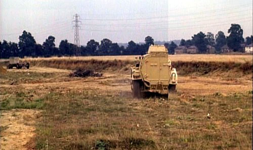
22nd February - Thanks to long-time contributor Jaz Wiseman for contributing locations from THE SENTIMENTAL AGENTepisode All that Jazz. In anticipation of more of the same we have started a THE SENTIMENTAL AGENT index page. 6th February - Greg Mishevski has proved himself to be a master at finding mews locations, and here is another one to prove it. GIDEON’S WAY: The Perfect Crime (Leslie Norman: May 1965)Ladbroke Road turning into Ladbroke Mews, W11 – Gideon arrives in a police car at the flat of Michael Spender, just too late.
(Identified by Greg Mishevski, aka SainT on the Britmovie Forum, 6th February 2011)
Boscobel Place, SW1 – Todd (Patrick Allen) arrives back at his mews apartment. He has been followed by Sandra Casey (Jean Marsh) in a taxi. She pays off the taxi driver (Richard Davies) and proceeds to confront Todd. She soon discovers that Todd is not the man’s real name.
(Identified by Greg Mishevski, aka SainT on the Britmovie Forum, February 2011)
Furneux Pelham, Hertfordshire– Robert Carne (Ray Barrett) and Marion Grove (Rosemary Leach) arrive at the country cottage they have rented (Pheasant Cottage, The Causeway). It is not long before Bert Macey (John Tate) arrives to make trouble for Carne.
(Identified by Greg Mishevski, aka SainT on the Britmovie Forum, February 2011)

Furneux Pelham, Hertfordshire– Robert Carne goes for a drink and an alibi at the local pub (The Star, The Causeway). He notices the police station (Brick Cottage, The Causeway) and decides to use the local sergeant to confirm his story.
(Identified by Greg Mishevski, aka SainT on the Britmovie Forum, 2nd February 2011)

 1st February - Thanks to Sam
Denham for help with this one.
THE PERSUADERS!:TheTime and The Place
1st February - Thanks to Sam
Denham for help with this one.
THE PERSUADERS!:TheTime and The PlaceHamilton Terrace, NW8 - Brett (Roger Moore) drives his Aston Martin towards Grove Court (turning off Carlton Hill and driving up Hamilton Terrace).
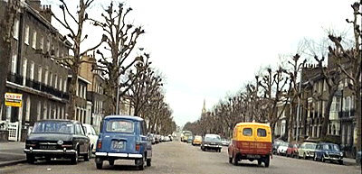
9th January - All updates before October 2010 removed to News Archive 2009 - 2010 page. All updates before 2011 will be removed from this page in due course. The main reason is to reduce the size of this page for regular readers and because as the page grows the hyperlinks become very unstable. I'm still using Word to edit these pages and everyone suffers as a consequence.Thanks to
this thread on the Britmovie Form we have traced this short piece of action from THE PRISONER. THE PRISONER: Do Not Forsake Me Oh My DarlingJ16: A1081, London Colney By Pass - Number 6 is being followed from London to Dover by Potter in his car. Potter radios in to confirm Number 6's destination.
(Identified with the Help of Alan Field, October 2010)
 8th January - The honour of the
first locations identified in 2010 goes to Paul
Canty. He has found two locations from GIDEON'S WAY which have
been on the books for several years. Both locations look very much as
they did
in 1964.
GIDEON’S WAY: The Firebug
8th January - The honour of the
first locations identified in 2010 goes to Paul
Canty. He has found two locations from GIDEON'S WAY which have
been on the books for several years. Both locations look very much as
they did
in 1964.
GIDEON’S WAY: The FirebugWilles Road, NW5 - Tom Bishop (George Cole) goes back to his digs (23 Willes Road) with the new scooter.
 GIDEON’S WAY:
The State
Visit (John Moxey:
August
1964)
GIDEON’S WAY:
The State
Visit (John Moxey:
August
1964)North Villas, NW1 – The Fischer’s home (5 North Villas), which Detective Chief Inspector David Keen (Alexander Davion) visits looking for Max Fischer.

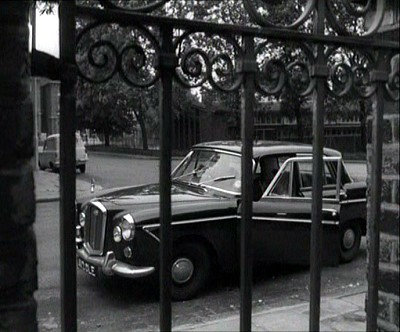
3rd January - Mike Richardson has started work on the 1971 Thames Television series PATHFINDERS. The series was made on film by Toledo Films with the production based at EMI Elstree (Associated British) Studios. He has already spotted a number of well-known locations as well as use of the re-vamped standing sets. As such it must be considered as being a fully-fledged Avengerland series.We are hoping that we will eventually hear from anyone spotting location featured in series such as
GHOST SQUAD, FROM A BIRD'S EYE VIEW, INTERPOL CALLING, THE NEW ADVENTURES OF CHARLIE CHAN and THE SENTIMENTAL AGENT. Link to News Archive 2009 - 2010 Link to News Archive 2007 - 2008 ENTER AVENGERLAND